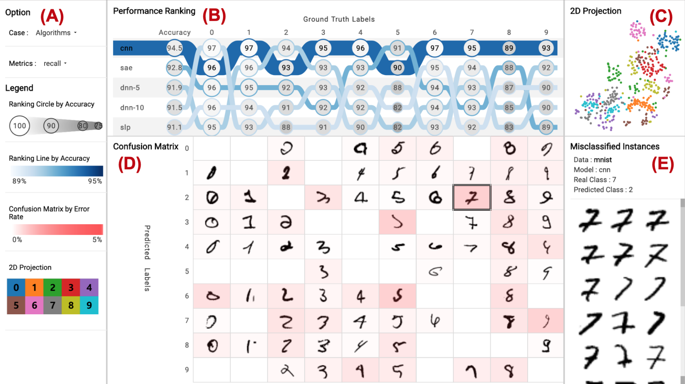
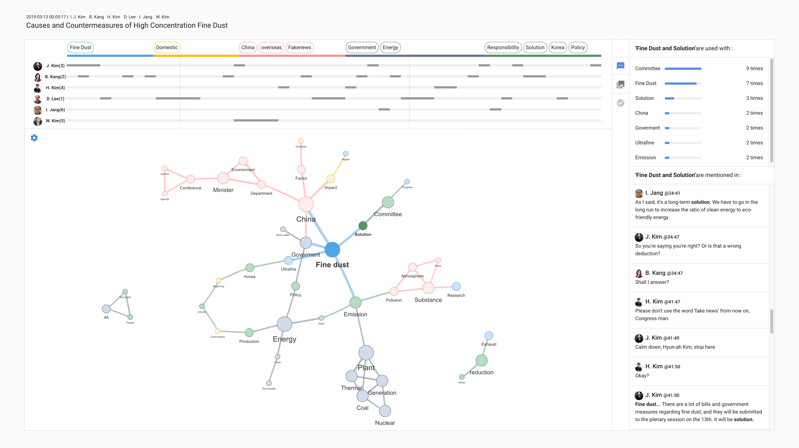
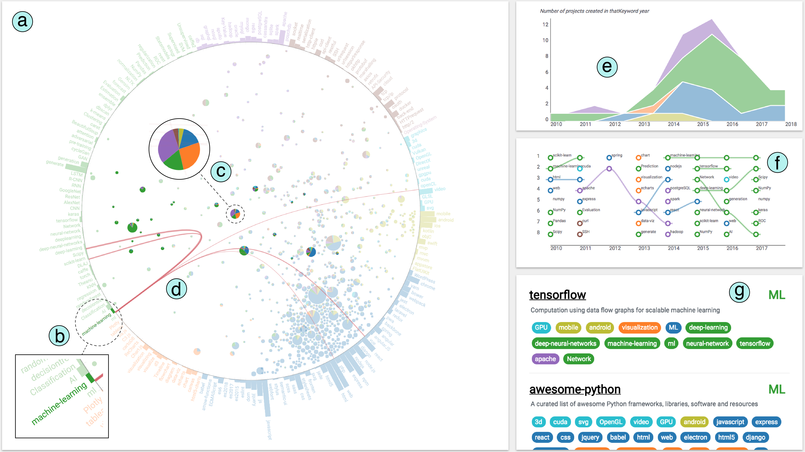
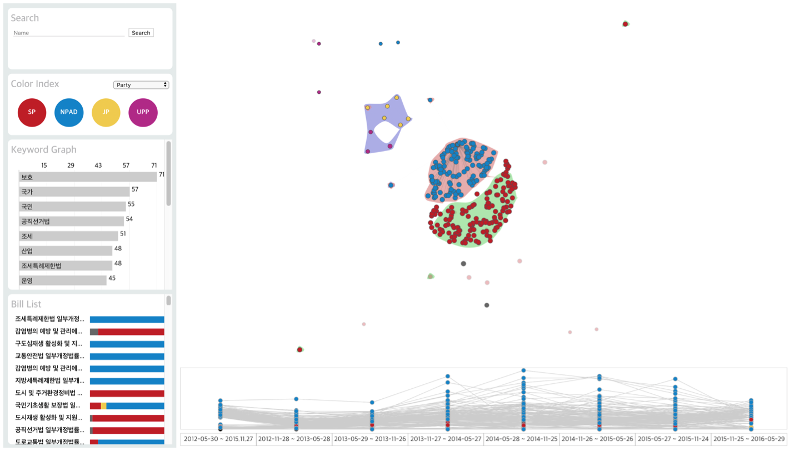

제 목표는 복잡한 데이터를 이해하는 장벽을 낮추는 것입니다.
특히 제 연구 비전은 '시각화를 통한 머신러닝 모델 해석과 개선'에 있습니다.
머신러닝 모델은 높은 성능에도 불구하고 해석과 디버깅이 어렵다는 이유로 활용에 어렵곤 합니다.
머신러닝 모델의 행동 패턴을 이해하는 것은 인공지능 모델을 개선하고 활용하는데 위해 필수적입니다.
머신러닝 모델의 이해하기 어려운 이유는 학습에 많은 변수(data, parameter, hyperparams, ect.)가 있기 때문입니다.
데이터 시각화는 많은 데이터 속에서 패턴을 찾는다는 강점이 있습니다.
인공지능 설명에 데이터 시각화가 핵심 역할을 할 것이라고 생각합니다.
저는 머신러닝 모델이 더 높은 성능과 해석 가능성을 갖도록 만들기 위해 데이터 시각화 시스템을 만들어 왔습니다. 참신하고 효과적인 데이터 분석 시스템을 만들기 위해 웹 프론트엔드, 데이터 시각화, 머신러닝을 공부하고 있습니다. 저와 함께 프로젝트를 하고 싶은 분은 아래 이메일로 연락 주세요!
저는 머신러닝 모델이 더 높은 성능과 해석 가능성을 갖도록 만들기 위해 데이터 시각화 시스템을 만들어 왔습니다. 참신하고 효과적인 데이터 분석 시스템을 만들기 위해 웹 프론트엔드, 데이터 시각화, 머신러닝을 공부하고 있습니다. 저와 함께 프로젝트를 하고 싶은 분은 아래 이메일로 연락 주세요!
Education
-
석사 과정
아주대학교 라이프미디어 협동과정
2019-재학 중
데이터 시각화에 대한 더 심도 깊은 연구를 하기 위해 대학원에 진학했습니다. 주요 연구주제는 웹 기반 데이터 분석 시스템, 머신러닝 모델의 성능 평가, 네트워크(그래프) 시각화 입니다. -
학사
아주대학교 미디어학과
2015-2019
미디어 콘텐츠 기획자이자 개발자로 성장하기 위한 시간이었습니다. 프로젝트를 중심으로 진행되었던 학교 생활 덕분에 다양한 지식과 기술을 익힐 수 있었습니다. 웹 프론트엔드 개발을 위하여 프로그래밍을 공부했고, 인터페이스 디자인을 수월하게 하기 위해 다양한 어도비 디자인 툴을 익혔습니다. 더 좋은 콘텐츠를 만들기 위하여 UX 디자인과 디지털 미디어 심리학을 공부했습니다.
Internship Experience
-
UC Davis VIDI Labs,
Visiting Researcher at VIDI labs
2020.03 - 현재
VIDI Labs 는 캘리포니아 주립대학 데이비스 캠퍼스 컴퓨터공학과의 데이터 시각화 연구실입니다. 데이터 시각화 분야의 권위있는 연구자이신 Kwan-Liu Ma 교수님의 지도 아래서 머신러닝 모델의 성능 평가 연구와 대용량 네트워크 비교를 위한 시각화 연구를 수행하고 있습니다. 이곳에서 연구하는 동안 연구의 가치를 판단하는 안목과 영어 실력을 향상시켜 글로벌 인재가 되고자 합니다. -
(주) 더더랩,
Intern
2017.04 - 2019.02
더더랩은 소프트웨어를 개발하고 공급하는 회사입니다. 저는 이 회사에서 웹 프론트엔드 개발자로서 역량을 갈고 닦았습니다. 2017년 봄, 학교의 소개로 멤버십 프로그램을 시작했습니다. 멤버십 프로그램이 종료된 이후에도 인턴으로 근무했습니다. 더더랩에서 근무하는 동안 TypeScript, Vue, Firebase 등 다양한 웹 개발 기술 스택을 쌓았습니다. 참여한 프로젝트에서는 주로 웹 프론트엔드와 데이터 시각화 개발을 맡았습니다.
Research
-
A Visualization System for
Performance Analysis of Image Classification Models
IS&T International Symposium on Electronic Imaging (EI'20), 2020.
PDF Code Web site Video -
A Study of Colormaps in Network Visualization
MDPI Applied Sciences (Appl. Sci. 2019, 9(20)), 2019.
PDF -
A Narrative Topic Map Visualization to Summarize and Recall a Meeting
IEEE Visualization Conference(InfoVis'19), 2019.
PDF Poster -
GitViz: An Interactive Visualization System for
Analyzing Development Trends in the Open-Source Software Community
IEEE Pacific Visualization Symposium(PacificVis'19), 2019.
PDF Video -
ComDia+: An Interactive Visual Analytics System for
Comparing, Diagnosing, and Improving Multiclass Classifiers
IEEE Pacific Visualization Symposium(PacificVis'19), 2019.
PDF -
A visual analysis of power relations among people on time-series data using network visualization
Social Science History Association(SSHA'18), 2018.
PDF -
An Interactive Visualization To Help You Gain Knowledge from Authoritative Developers
IEEE Visualization Conference(InfoVis'18), 2018.
PDF Poster